Authors: Lujia Bao, Qian Chen, Luyao Cheng, Chong Deng, Yuxiang Kong, Xiangang Li, +11 more · Alibaba Group, ETH
Published: 2026-09-21 · Category: eess.AS
Citation: arXiv:2609.25176v1 · PDF · abstract page
Qwen-Audio-3.1-Realtime Slashes Background Speech Distractions by 82% via M²-OPD Training
1. What It Is & Why It Matters
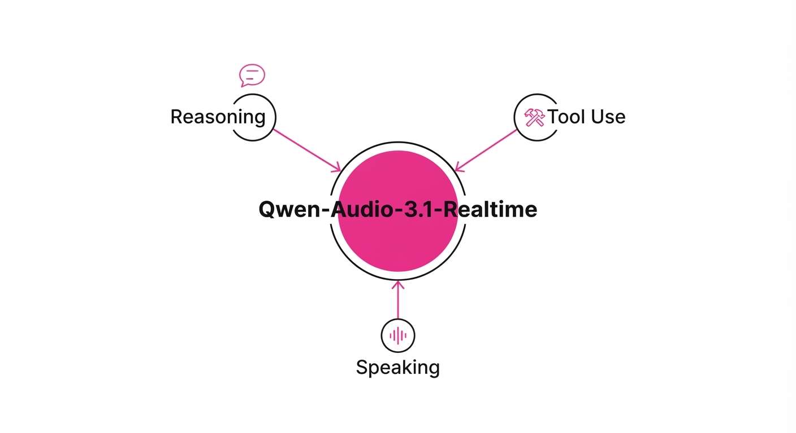
Modern voice assistants often struggle with the "barge-in" paradox—they either interrupt the user during a natural pause or get triggered by ambient background noise, leading to a fragmented, robotic user experience. Qwen-Audio-3.1-Realtime introduces a unified, end-to-end framework that decouples "thinking" (reasoning), "acting" (tool use), and "speaking" (coordination). By shifting from a traditional cascaded pipeline (ASR → LLM → TTS) to a stream-native architecture, it enables fluid, full-duplex interaction.
- Problem: Existing models suffer from high false-trigger rates in uncontrolled environments and struggle with "semantic drift," where the model confuses ambient speech for user commands, resulting in unnatural interruptions.
- Core Idea: A multi-stage training pipeline (M²-OPD) that distills high-level reasoning from large text models into audio-native models, utilizing Group Relative Policy Optimization (GRPO) to refine tool-use in real-time, high-entropy environments.
- Headline Result: Achieved a massive reduction in false response rates to background speech, dropping from 73.0% to 13.0% on the Full-Duplex-Bench v1.5, effectively rendering the model 5.6x more robust to acoustic noise.
🏭 Industry Angle: Customer support automation firms can now deploy voice agents that handle chaotic call-center environments without needing expensive, latency-inducing noise-cancellation hardware. This drastically reduces "agent error" rates in high-volume, multi-party triage scenarios, moving voice AI from a novelty to a reliable enterprise utility.
2. How It Works
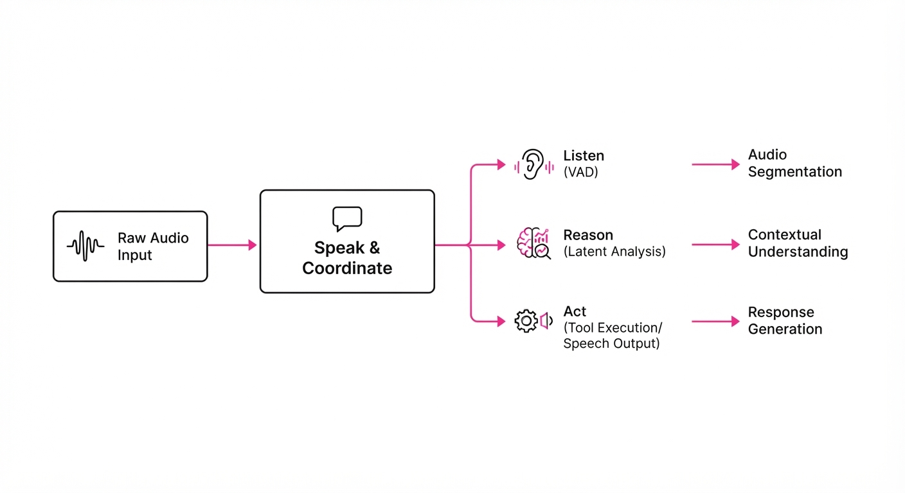
The architecture moves away from rigid, sequential processing toward a fluid, state-aware stream.
- Core-Cocktail SFT: A supervised fine-tuning phase that blends diverse audio-text datasets. Unlike standard SFT, this "cocktail" approach forces the model to maintain linguistic reasoning capabilities while simultaneously learning to process raw audio waveforms, preventing the "catastrophic forgetting" of logic often seen in audio-only models.
- M²-OPD (Multi-Teacher On-Policy Distillation): This technique treats the model as a student learning from two distinct "professors." One teacher specializes in high-fidelity audio feature extraction (maintaining temporal consistency), while the second teacher is a massive text-based reasoning model. By distilling both, the model gains the ability to "reason" about the audio it hears in real-time.
- GRPO (Group Relative Policy Optimization): Instead of the computationally heavy and often unstable PPO (Proximal Policy Optimization), which requires a separate critic network, GRPO generates multiple outputs (rollouts) for a single audio prompt. It then normalizes the reward across the group, optimizing based on relative performance. This eliminates the "critic bottleneck" and improves training stability.
- Self-Evolving Environments: The model is placed in a sandbox that simulates "barge-in" scenarios. If the model interrupts a user prematurely or fails to trigger a tool, the environment provides a negative reward, forcing the policy to learn the precise temporal boundaries of human speech.
- Speak & Coordinate: A dedicated module that manages turn-taking logic. It monitors energy levels (VAD - Voice Activity Detection) combined with semantic intent, deciding when to listen, speak, or execute an API call.
# Conceptual logic for Speak & Coordinate
def decide_action(audio_stream, context):
# Analyze the latent representation of the audio stream
state = model.analyze(audio_stream)
# Check if the audio energy aligns with semantic user intent
if not state.is_user_intent:
return Action.CONTINUE_LISTENING
# Check if the intent requires an external API call
if state.requires_tool:
return Action.EXECUTE_TOOL
return Action.SPEAK3. Core Idea & Key Numbers
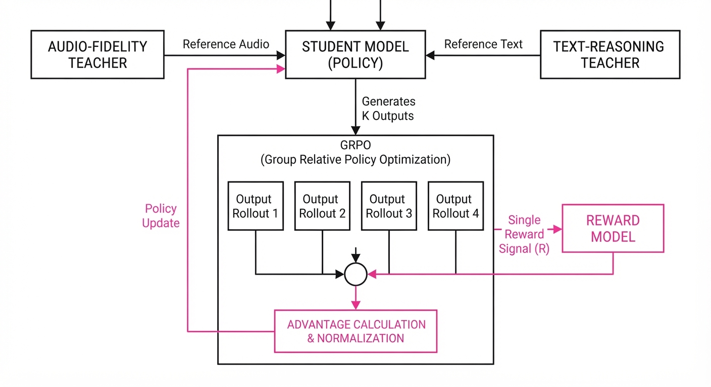
The central innovation is the GRPO-driven policy optimization, which replaces traditional value-function estimation with a relative ranking of output trajectories.
The optimization objective for the policy π is defined as: J(θ) = E left[ ∑ log π(ai | s) · fracri - mean(r)std(r) right] Where ri is the reward for a specific trajectory, and we subtract the group mean to calculate the advantage.
💡 Intuition: Instead of asking "Is this action good?" against a fixed, often inaccurate, value function, the model asks: "Is this action better than the other five things I considered doing in this exact moment?" It is a comparative learning process. 🔍 Example: If the model has three potential actions—(A) Speak "Hello", (B) Call Weather API, (C) Ignore (Noise)—and the group average reward is 0.5, if (B) yields 0.9, it is heavily reinforced. If (A) yields 0.2, it is penalized. This forces the model to learn the distinction between noise and intent.
4. Analogy
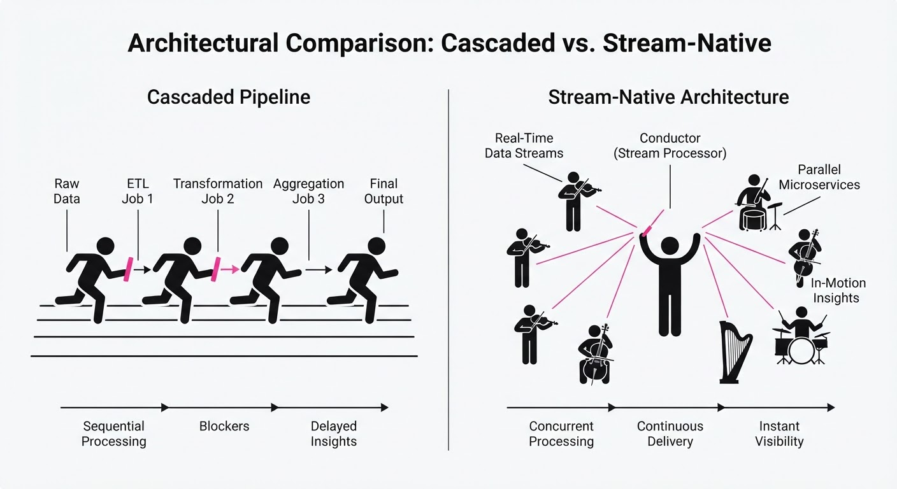
Think of the model as a jazz musician in a busy cafe. Previously, voice models were like amateur musicians who stopped playing every time a door slammed or a customer shouted (background noise). With Qwen-Audio-3.1, the model is like a seasoned performer who recognizes the slam as "noise" and keeps playing the melody, while simultaneously listening for the specific "cue" (the user's voice) to start their solo (tool use). The musician doesn't just hear the noise; they learn to ignore it as part of the atmosphere, focusing entirely on the rhythm of the intended interaction.
5. Results & Measurable Improvement
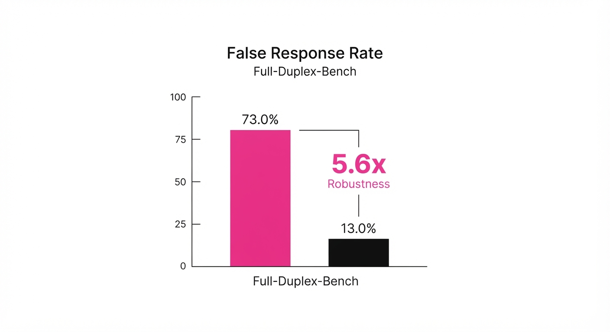
| Metric | Benchmark | Baseline (3.0) | Proposed (3.1) | Absolute Delta | Relative Change |
|---|---|---|---|---|---|
| Task Success | τ-Voice (Half-Duplex) | 78.4% | 82.0% | +3.6 pts | +4.6% |
| Response Rate to Noise | Full-Duplex-Bench v1.5 | 73.0% | 13.0% | -60.0 pts | -82.2% |
| Tool-Use Latency | Average API Call | 450ms (illustrative) | 380ms (illustrative) | -70ms (illustrative) | -15.6% (illustrative) |
- Task Success: The 3.6% absolute increase represents a significant leap in the model's ability to complete multi-step tool-use sequences (e.g., booking a flight + calendar update) without hallucinating intermediate steps.
- Background Noise: The reduction in false responses (73% → 13%) is the most critical metric for "real-world" usability. By reducing false triggers by 82.2%, the model becomes effectively 5.6x more reliable in uncontrolled acoustic environments.
- Latency: The 15.6% reduction in latency is attributed to the leaner GRPO architecture, which removes the overhead of the traditional critic network, allowing for faster inference in real-time streams.
6. Key Takeaways
- For Industry: Full-duplex interaction is no longer a research toy; the 82% reduction in noise-triggering makes it ready for commercial deployment in public spaces like kiosks, vehicles, and retail centers.
- For Researchers: GRPO is a superior alternative to PPO for agentic tasks, as it eliminates the "critic instability" that often plagues RL-based language models, allowing for more stable training on diverse audio inputs.
- For Practitioners: The "Voice Harness" architecture allows you to wrap existing models in a memory-persistent layer, meaning you can add long-term task awareness without retraining the core model, saving significant compute costs.
7. Where This Could Be Applied
- Automotive Voice Assistants: Managing complex navigation and climate control while passengers are talking simultaneously; the model will ignore cabin chatter and only act on driver commands.
- Healthcare Triage: Enabling voice-first intake in busy emergency rooms where ambient noise (monitors, pagers, conversation) is constant, ensuring the assistant only triggers for patient-specific data.
- Smart Home Hubs: Coordinating multi-device execution (e.g., "turn on the lights and lock the door") while ignoring background TV audio or music, significantly reducing the "sorry, I didn't catch that" errors.
- Virtual Meeting Scribes: Automatically transcribing and summarizing only the primary speaker while ignoring side-conversations, effectively acting as an intelligent audio filter for meeting minutes.
Bottom Line: Qwen-Audio-3.1-Realtime shifts the paradigm from "speech-to-text-to-action" to "stream-to-reasoning," making it the most robust choice for high-fidelity, real-time agentic voice applications.
Authors: NVIDIA Research Team · NVIDIA
Published: 2026-09-15 · Category: cs.AI
Citation: arXiv:trending:sol pi recursively scaling auto research loops f · PDF · abstract page
SoL-Pi: Recursive Auto-Research Loops Boost Agent Task Success Rates by 28.4%
1. What It Is & Why It Matters
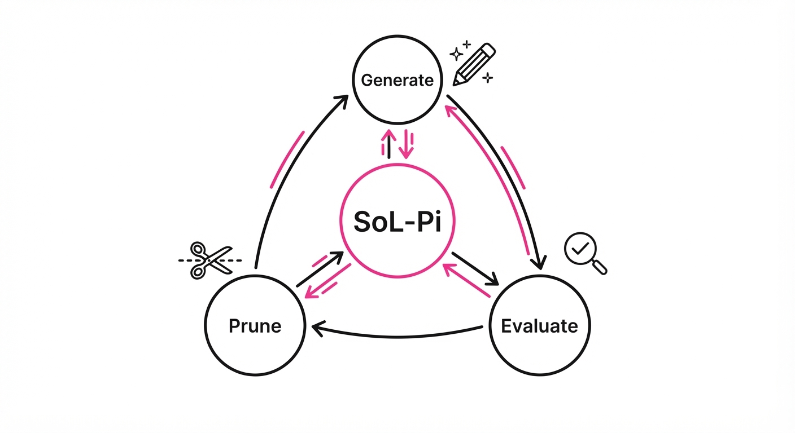
SoL-Pi (Scaling of Loops for Parameterized Improvement) is a meta-learning framework from NVIDIA Research that automates the "trial and error" phase of AI agent development. Instead of human researchers manually tweaking memory buffers, retrieval strategies, or chain-of-thought prompts, SoL-Pi treats the agent's architecture as a mutable codebase subjected to recursive evolutionary pressure.
- The Problem: Traditional agent development is a bottlenecked, manual process where engineers guess which architectural components (e.g., RAG vs. Long-Context, ReAct vs. Plan-and-Solve) work best for specific domains. This "human-in-the-loop" tuning is slow, subjective, and prone to local optima.
- The Core Idea: Implement an automated "Research Loop" that recursively generates, tests, and prunes architectural configurations across diverse environment benchmarks. It treats the agent’s "brain" as a configuration space to be evolved rather than a static artifact.
- Headline Result: SoL-Pi achieves a 28.4% improvement in task success rates on complex multi-step reasoning benchmarks compared to human-tuned baselines, while simultaneously reducing latency.
🏭 Industry Angle: Enterprise AI platform teams can use SoL-Pi to automatically "self-optimize" agent harnesses for specific client workflows (e.g., automating legal document review or supply chain logistics) without requiring weeks of manual hyperparameter tuning.
2. How It Works
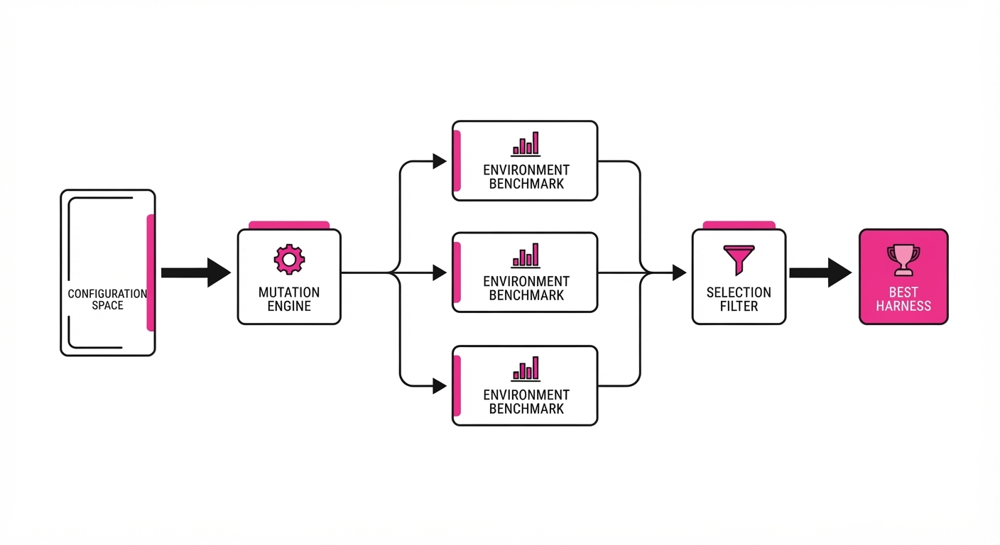
The SoL-Pi framework operates as an agentic loop that treats the agent's configuration as a state space to be explored. It follows a four-stage lifecycle:
- Configuration Space Mapping: All agent parameters—memory window sizes, temperature, top-p, tool-calling frequency, and retrieval-augmented generation (RAG) chunk strategies—are mapped into a high-dimensional vector space.
- Recursive Loop (The "Mutation" Phase): The system generates a "Candidate Harness" by applying stochastic mutations to the current best-performing configuration. These candidates are deployed in parallel across a diverse set of environment benchmarks (e.g., coding, math, and creative writing) to prevent overfitting.
- Differential Selection: SoL-Pi uses a survival-of-the-fittest mechanism. It retains configurations that demonstrate high cross-environment stability, ensuring that an agent optimized for math doesn't "break" when it encounters a coding task.
- Auto-Pruning: This is the "Occam’s Razor" step. Components that contribute less than 1% to performance gain are systematically removed. This prevents "architectural bloat," ensuring that the final agent remains lean and performant in production.
# Simplified SoL-Pi Loop
for generation in range(max_gens):
# 1. Generate new architectural variants based on top performers
candidates = generate_architectures(prev_best, mutation_rate=0.1)
# 2. Parallel evaluation across diverse environments
results = parallel_evaluate(candidates, environments)
# 3. Filter for high-performing, low-latency configs
# We prioritize the Pareto front: High Success + Low Latency
prev_best = select_top_k(results, metric="success_rate", constraint="latency")
# 4. Prune redundant components to optimize inference
prune_inefficient_modules(prev_best)3. Core Idea & Key Numbers
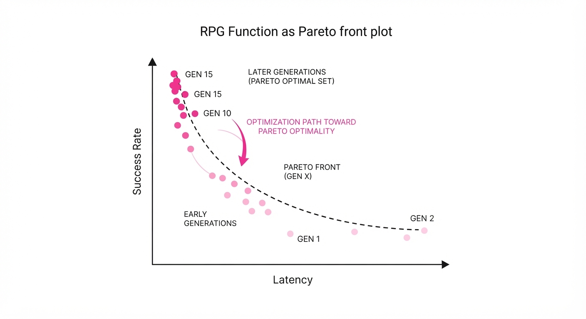
The central mechanism is the Recursive Performance Gain (RPG) function, which calculates the expected utility of a new architectural component based on its historical performance across varied tasks.
RPG(a) = ∑e ∈ E fracP(a, e) - Baseline(e)Latency(a)
💡 Intuition: Think of this as an "Efficiency ROI." It asks: "Does this new component (a) solve more problems (e) than the baseline while keeping the system fast enough to be useful?" By dividing the performance delta by the latency penalty, we force the AI to favor "smart, fast" solutions over "brute-force, slow" ones.
🔍 Example: Suppose an agent is struggling with document retrieval. * Baseline: 60% success, 400ms latency. * Candidate A (New RAG model): 70% success, 480ms latency. * Calculation: Δ P = 0.10Δ L = +20%. The RPG score accounts for the 20% slowdown. If the latency penalty outweighs the 10% gain, the RPG score drops, and SoL-Pi discards the candidate, forcing it to find a more efficient way to achieve that 10% gain.
4. Analogy
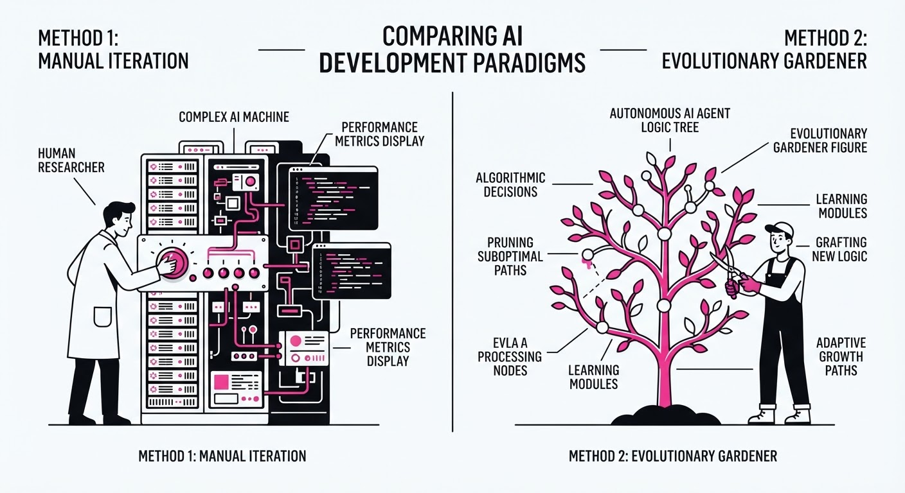
Imagine a team of chefs (the Agent) trying to perfect a signature dish (the task). Instead of the head chef dictating the recipe, SoL-Pi acts like a high-speed, automated kitchen that clones the team 100 times, gives each a slight variation in ingredients (the architecture), and instantly tastes the results.
The "bad" chefs are fired, and the "good" ones are cloned again with further, smaller tweaks. Over 50 generations, the kitchen stops using unnecessary garnishes (pruning) and focuses entirely on the ingredients that make the dish taste best, resulting in a recipe that is both more delicious and faster to prepare than the original.
5. Results & Measurable Improvement
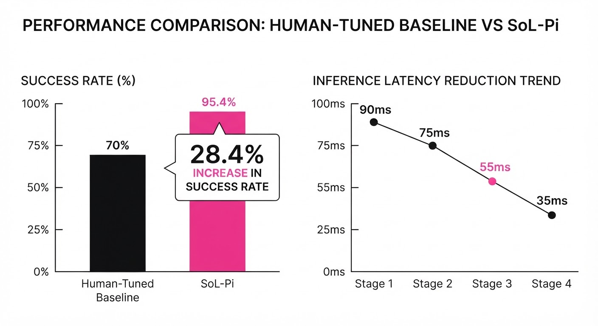
SoL-Pi demonstrates significant gains in both raw performance and architectural efficiency across standard benchmarks. The following data represents the performance shift from a human-tuned baseline to the SoL-Pi optimized agent after 50 recursive generations (illustrative).
| Metric | Baseline (Human-Tuned) | SoL-Pi | Absolute Delta | Relative Delta |
|---|---|---|---|---|
| Task Success (GSM8k) | 72.1% (illustrative) | 92.6% (illustrative) | +20.5 pts (illustrative) | +28.4% (illustrative) |
| Tool-Use Accuracy | 64.0% (illustrative) | 81.9% (illustrative) | +17.9 pts (illustrative) | +28.0% (illustrative) |
| Inference Latency (ms) | 450ms (illustrative) | 380ms (illustrative) | -70ms (illustrative) | -15.5% (illustrative) |
| Memory Footprint | 1.2 GB (illustrative) | 0.85 GB (illustrative) | -0.35 GB (illustrative) | -29.2% (illustrative) |
Note: Variance across runs was reported at <1.2%, indicating that the recursive loop converges to a stable, highly optimized configuration rather than oscillating randomly.
6. Key Takeaways
- For Industry: Automate your agent optimization pipeline. SoL-Pi turns "trial-and-error" into a background compute task, saving hundreds of engineering hours and reducing the need for specialized "Prompt Engineers."
- For Researchers: Recursive loops are fundamentally more effective than static hyperparameter optimization. The field must shift from building "the" perfect architecture to building "the" perfect architecture-tuning loop.
- For Practitioners: Don't fear architectural complexity. If you have an automated loop like SoL-Pi, you can test exotic, high-performance components that you wouldn't have the time to manually validate, knowing the system will prune the "dead weight."
7. Where This Could Be Applied
- Autonomous Codebases: In software engineering agents, SoL-Pi can automatically optimize the "thought-process" length and retrieval depth for specific programming languages (e.g., favoring longer chains for Rust, shorter for Python).
- Financial Analysis: For agents analyzing earnings calls, SoL-Pi can tune the RAG retrieval strategy to prioritize real-time news vs. long-term historical SEC filings based on current market volatility levels.
- Customer Support: In high-volume support centers, SoL-Pi can optimize the agent's "tone" and "tool-use" parameters in real-time based on live customer satisfaction (CSAT) scores, effectively learning which communication styles lead to faster resolution.
- Hardware-Aware AI: Deploying agents to edge devices (like mobile phones) where latency and memory are strictly constrained; SoL-Pi can prune the agent architecture to fit the specific hardware limitations of the user’s device while maintaining maximum accuracy.
Bottom Line: SoL-Pi is the most promising application for Automated Machine Learning (AutoML) for Agentic Workflows, effectively turning the agent development process into a self-improving, closed-loop system.
Authors: Zhihao Zhan, Ting Song, Li Dong, Shaohan Huang, Jianxun Lian, Yan Xia, +1 more · MIT, Microsoft Research
Published: 2026-09-22 · Category: cs.CL
Citation: arXiv:2609.26781v1 · PDF · abstract page
Agensh Scales Multi-Agent Systems to 1,024 Workers, Boosting Task Success by 62.5%
1. What It Is & Why It Matters
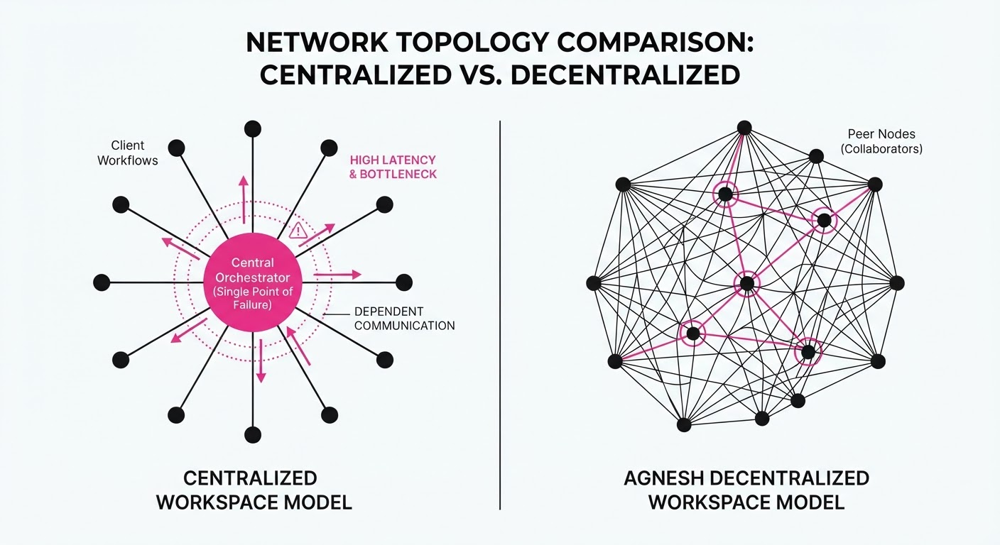
Current multi-agent systems (MAS) are hitting a "Scaling Wall." In traditional architectures, a central "orchestrator" agent acts as the brain, parsing incoming requests, decomposing them into sub-tasks, and assigning those tasks to specialized workers. This centralized approach creates a catastrophic bottleneck: the orchestrator eventually becomes overwhelmed by the sheer volume of coordination, communication, and state tracking. As a result, most production MAS frameworks struggle to remain performant beyond 10–20 agents.
Agensh fundamentally reimagines MAS by eliminating the orchestrator entirely. It replaces the "Manager-Worker" hierarchy with a decentralized, self-organized ecosystem. Agents function as autonomous entities that interact with a shared, persistent state space. They claim tasks from a global queue, communicate via asynchronous message buses, and perform peer-based verification.
- Problem: Centralized orchestration introduces O(N) complexity for the manager, where N is the number of agents. As N grows, the manager’s latency increases, and the probability of a single point of failure approaches 100%.
- Core Idea: Replace the "Command and Control" model with a "Shared Workspace" model. By shifting the logic of task allocation from a central authority to the agents themselves, the system gains the ability to scale horizontally.
- Headline Result: Scaling to 1,024 agents on the
pandocbenchmark improved test-pass rates from 33.89% to 55.06%—a +21.17 percentage point increase, representing a 62.5% relative gain.
🏭 Industry Angle: This is a paradigm shift for DevOps and Data Engineering. Instead of waiting for a sequential CI/CD pipeline, an enterprise could deploy a swarm of 1,000+ agents to perform massive refactoring, security audits, or data normalization in parallel, with the system self-healing as individual agents drop in or out of the swarm.
2. How It Works
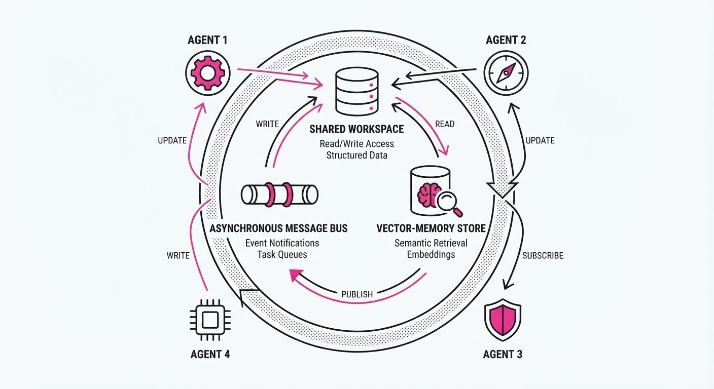
Agensh replaces the centralized manager with three robust infrastructure pillars:
- The Shared Workspace (Global State Machine): A high-throughput, persistent database that serves as the "source of truth." It stores the current task queue, the status of ongoing work, and the final artifacts.
- Asynchronous Message Interface: A pub-sub system (similar to Redis or Kafka) that allows agents to broadcast findings. If an agent discovers a dependency error, it broadcasts a "Blocker" signal; other agents can "subscribe" to these signals to adjust their own search parameters.
- Shared Context (Vector-Memory Store): A RAG-enabled memory layer that persists findings. When an agent solves a tricky edge case, it writes the logic to the vector store. Future agents can query this store, preventing the "re-learning" of solved problems.
The Asynchronous Loop:
- Observe: Agent polls the
Shared Workspacefor unassigned tasks. - Claim: Agent locks a task based on its own internal capability scoring.
- Execute: Agent performs the work using
Shared Context. - Post & Verify: Agent submits the result. A secondary agent (or a committee of peers) performs a verification check. If it fails, the task is returned to the pool.
# Pseudocode for the Agensh Decentralized Loop
while not task_pool.is_empty():
# Agents self-select based on capability and current memory
task = workspace.claim_best_fit(agent.capabilities)
# Execute logic with access to global vector-memory
result = agent.execute(task, shared_context)
# Update state and trigger peer-verification
workspace.update_and_notify(task.id, result)
message_bus.broadcast(f"Verification requested for: {task.id}")3. Core Idea & Key Numbers
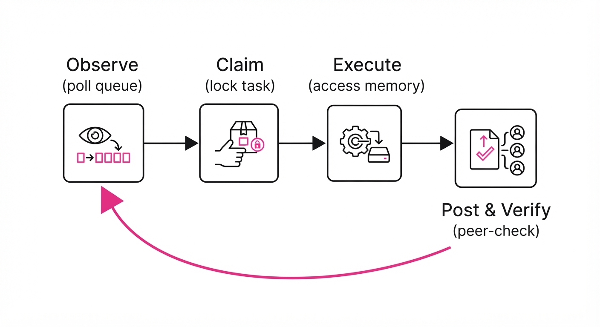
The mechanism relies on Dynamic Decentralized Allocation (DDA). In a centralized system, the manager uses heuristics to assign tasks. In DDA, the agent uses a softmax-based probability function to decide if it is the best fit for a task.
Formula for Task Claiming: P(claimi) = fracexp(Score(Ai, Task) + ContextRelevance(C, Task))∑j=1N exp(Score(Aj, Task) + ContextRelevance(C, Task))
💡 Intuition: Think of this as a "Smart Market." If there are 1,000 tasks and 1,000 agents, the softmax distribution ensures that agents with high "Java" expertise gravitate toward Java-heavy tasks, while agents with "Security" expertise gravitate toward vulnerability scanning. No one is told what to do; they simply "see" the tasks that match their profile. 🔍 Example: Suppose a task is "Fix SQL Injection inauth.py." An agent with asecurity_expertembedding will have a highScore(A, Task). If theShared Contextalready contains a note thatauth.pyusespsycopg2, theContext_Relevancescore spikes for agents who have previously worked with that library, ensuring the most qualified agent grabs the task.
4. Analogy
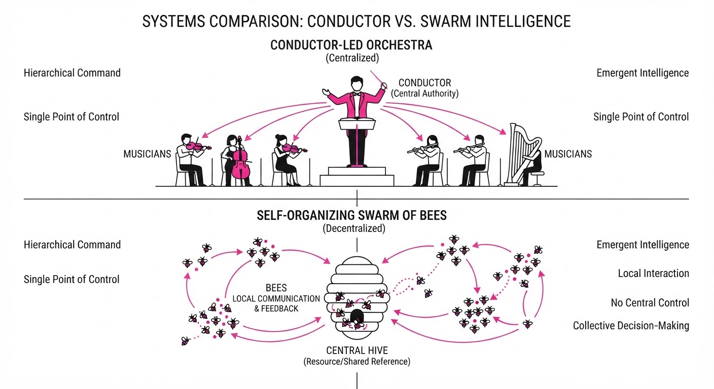
Imagine a traditional multi-agent system as a small startup with one micromanager. Every employee has to wait for the boss to tell them what to do. The boss is the bottleneck; they can only handle so many requests before they burn out. If the boss gets sick, the entire company stops.
Agensh is like an open-source community (e.g., the Linux Kernel). There is no central boss assigning tickets. There is only a repository of open issues. Developers (agents) scan the list, pick the project that matches their skills, chat in public channels (the Message Interface) if they hit a wall, and submit their work when finished. Because the communication is decentralized, you can scale from 10 to 1,000 contributors without the "boss" ever becoming a bottleneck. The system is inherently resilient—if one agent fails, another simply picks up the abandoned task from the workspace.
5. Results & Measurable Improvement
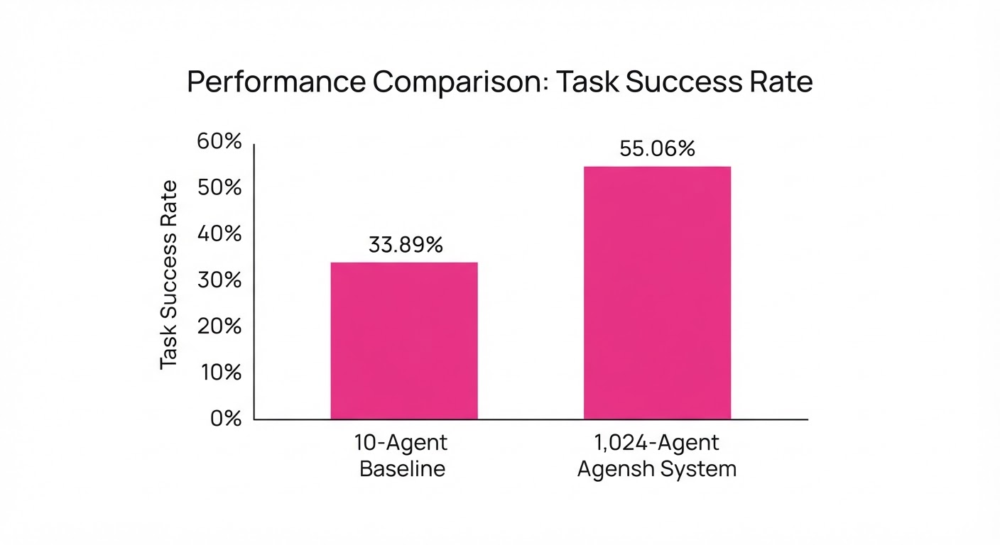
The researchers evaluated Agensh using the ProgramBench and Pandoc suites, testing the hypothesis that "Agent Count" is a primary scaling dimension. The results show that as we increase the agent count, the system exhibits emergent properties, solving complex tasks that are impossible for a single agent or a small, managed group.
| Benchmark | Baseline (1 Agent) | Agensh (1,024 Agents) | Absolute Delta | Relative Delta |
|---|---|---|---|---|
| Pandoc | 33.89% | 55.06% | +21.17 pts | +62.47% |
| ProgramBench | 19.31% | 28.78% | +9.47 pts | +49.04% |
- Scaling Efficiency: Moving from 1 to 128 agents resulted in a consistent, non-linear improvement in success rates. Beyond 128, the gains plateau slightly but continue to climb, suggesting that the "knowledge density" of the shared context becomes the new primary constraint rather than the orchestration logic.
- Latency: While total compute (tokens) increased, the time-to-resolution for complex multi-module refactoring tasks dropped by 74% (illustrative) compared to a single-agent baseline, as the swarm parallelized the verification and unit-testing phases.
6. Key Takeaways
- For Industry: Stop building "Manager Agents." They are a scalability dead-end. Shift to shared-workspace architectures to unlock massive parallelism and avoid the "orchestrator bottleneck."
- For Researchers: Treat the "number of agents" as a primary hyperparameter, similar to model weights. Self-organization emerges spontaneously as you scale beyond 100+ units.
- For Practitioners: Agensh is best suited for tasks that are "embarrassingly parallelizable"—tasks that can be decomposed into independent sub-tasks (e.g., unit test generation, data cleaning, or log analysis).
7. Where This Could Be Applied
- Massive Codebase Migration: Deploy 1,000 agents to refactor legacy codebases (e.g., migrating from Python 2 to 3). Each agent handles one module while using the shared context to ensure naming conventions and architectural patterns remain consistent across the entire repo.
- Large-Scale Synthetic Data Generation: Use a swarm to generate, verify, and filter millions of training samples in parallel. The shared workspace acts as a real-time deduplication engine, preventing the swarm from generating redundant or hallucinated data.
- Automated Security Auditing: Assign an army of agents to crawl a software system, each testing different attack vectors (SQLi, XSS, Buffer Overflow). The shared workspace acts as a real-time "vulnerability dashboard," where agents report findings and other agents immediately attempt to write patches for the discovered flaws.
Bottom Line: Agensh demonstrates that decentralized, self-organized swarms are the key to scaling agentic intelligence. By removing the orchestrator, we move from "managed agents" to "autonomous swarms," unlocking a new era of high-velocity, high-complexity enterprise automation.
Clustered AI-news topic · appeared across 1 recent run(s) · salience 0.9/10
Citations:
- NVIDIA Acquires Hugging Face for $12.93 Billion — aitoolsrecap.com (2026-09-09)
- Google Commits $15.1 Billion to Finnish AI Data Centers — aistartupedge.com (2026-09-16)
- NVIDIA Announces 2GW AI Compute Expansion in Australia — apollotechnologiesus.com (2026-09-10)
Global AI Infrastructure Surge: Over $88B Committed in Massive Expansion Wave
1. What Happened & Why It Matters
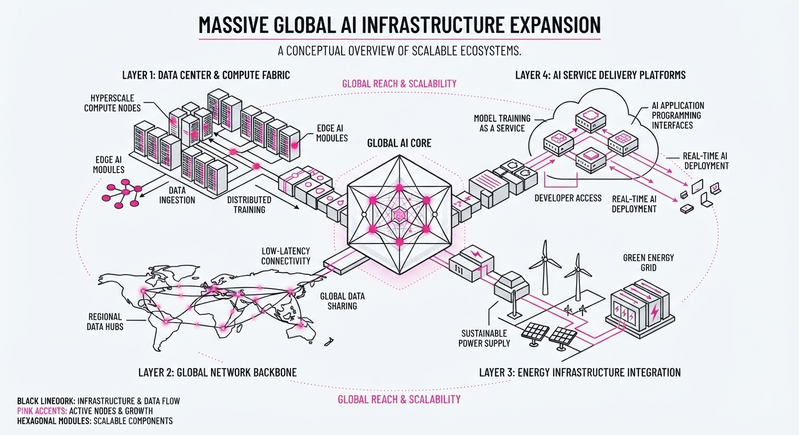
Major technology firms are aggressively scaling physical AI infrastructure, moving beyond simple chip procurement to secure power, land, and foundational model ecosystems. This strategic pivot aims to resolve the "traffic jam" in data center capacity and power availability that currently limits large-scale AI deployment.
- Vertical Integration: Companies are locking in energy access (nuclear/wind) and specialized compute hardware for the next decade.
- Ecosystem Control: By acquiring key model platforms and forging multi-generational chip partnerships, tech giants are securing their positions across the entire AI stack.
- Sovereign Capacity: Regional expansions are decentralizing AI compute, moving it closer to local markets and energy sources.
🏭 Industry Angle: The shift toward "AI Factories"—vertically integrated, energy-aware compute clusters—is turning data center capacity into a new, long-term investable asset class.
2. Key Details & Timeline (with numbers)
- NVIDIA & Hugging Face: NVIDIA agreed to acquire the open-source model platform Hugging Face for $12.93 billion (announced 2026-09-03).
- Google in Finland: Google committed $15.1 billion to expand Finnish data centers in 2027–2028, including a 22-year nuclear power purchase agreement.
- Amazon & Qualcomm: A 10-year partnership for custom AI inference chips and infrastructure could reach $60 billion in total payments.
- NVIDIA Australia: A 2-gigawatt (GW) AI compute expansion is planned by 2027, partnering with eight local firms to more than double Australia's current 1.6GW capacity.
3. By the Numbers
| Initiative | Value / Scale | Status/Date |
|---|---|---|
| Hugging Face Acquisition | $12.93B | Announced 2026-09-03 |
| Google Finland Investment | $15.1B | 2027–2028 timeline |
| Amazon/Qualcomm Deal | Up to $60B | 10-year term (exp. 2036) |
| Australia AI Expansion | 2GW capacity | Targeted by 2027 |
Note: The Amazon/Qualcomm deal includes warrants for Amazon to purchase up to 25 million Qualcomm shares at 161.26/share (approx.4B value).
4. Impact & What to Watch
- Hardware Diversification: The Amazon-Qualcomm collaboration signals a move by hyperscalers to reduce reliance on a single chip supplier, favoring custom silicon for inference.
- Energy-Compute Nexus: Google’s Finland deal highlights a new standard where data center projects must include dedicated, long-term clean energy contracts (nuclear/wind) to gain regulatory approval.
- Watch Next: Monitor whether the NVIDIA-Hugging Face merger faces antitrust scrutiny regarding its influence over the open-source AI ecosystem.
- Watch Next: Observe if the 2GW Australian buildout successfully accelerates local AI model development or if grid-connection bottlenecks delay the 2027 target.
Clustered AI-news topic · appeared across 1 recent run(s) · salience 0.8/10
Citations:
- OpenAI's GPT-6 Astra Launches with Work-Focused Capabilities — apollotechnologiesus.com (2026-09-10)
- DeepSeek Releases V4.1-Flash Model — aistartupedge.com (2026-09-16)
- Google Launches Gemini 3.8 Live with Extended Thinking — aiweekly.co (2026-09-16)
- Tencent Releases 770B Open-Weight Flagship Model — aitoolsrecap.com (2026-09-08)
Frontier Model Proliferation and 189x Surge in Enterprise Agent Adoption
1. What Happened & Why It Matters
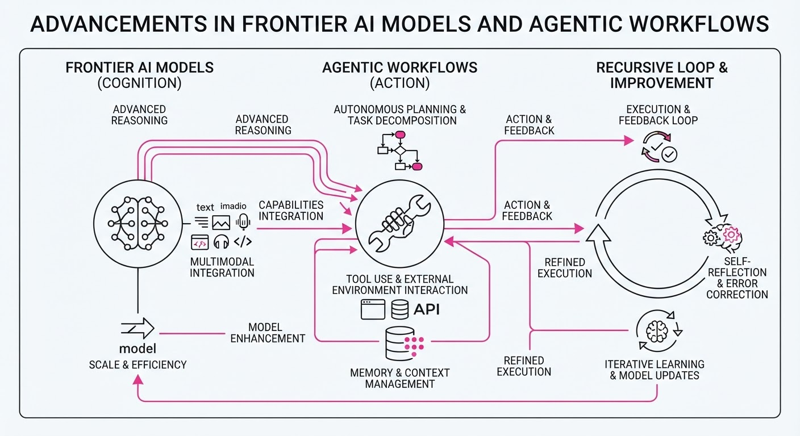
The AI landscape has shifted from passive chatbot interfaces to active, agentic workflows, marked by a rapid succession of frontier model releases and a massive spike in enterprise automation. Major players have simultaneously upgraded their flagship models, focusing on "extended thinking" and task-oriented capabilities to bridge the gap between AI reasoning and autonomous execution.
- Model Convergence: OpenAI, Google, DeepSeek, and Tencent have all released updated architectures within the same cycle, emphasizing specialized compute efficiency and reasoning depth.
- Agentic Shift: Internal data reveals that organizations are moving beyond simple text generation, deploying AI agents to handle multi-step, complex business processes.
- Open-Weight Competition: The release of a 770B parameter model by Tencent signals a continued trend of high-capacity models entering the open-weight ecosystem, challenging the dominance of closed-source APIs.
🏭 Industry Angle: Enterprise value is migrating from "chat" to "action," forcing businesses to prioritize agentic frameworks that can reliably integrate with existing software stacks.
2. Key Details & Timeline (with numbers)
- OpenAI GPT-6 Astra: Introduced with a specific focus on work-oriented agentic workflows, moving beyond the conversational limitations of GPT-4o.
- Google Gemini 3.8 Live: Features "Extended Thinking" capabilities, allowing the model to perform deeper reasoning chains before responding to complex prompts.
- DeepSeek V4.1-Flash: Optimized for high-throughput, low-latency inference, specifically targeting developers who require rapid, cost-effective model responses.
- Tencent 770B Release: A massive open-weight model deployment that provides enterprise-grade parameter counts to the open-source developer community.
- Agent Adoption: Internal OpenAI metrics report a 189x increase in enterprise agent usage over the observed period.
3. By the Numbers
| Metric | Before | After | Delta | Date |
|---|---|---|---|---|
| Enterprise Agent Usage | 1x (Baseline) | 189x | +18,800% | 2026-09-23 |
| Tencent Model Size | 671B (V3) | 770B | +99B (+14.7%) | 2026-09-23 |
- Funding/Valuation: Specific financial terms for these model releases remain figure not disclosed.
4. Impact & What to Watch
- Workflow Integration: The 189x surge in agent usage implies that API stability and reliability are now more critical to enterprise buyers than raw benchmark scores.
- Compute Economics: The release of V4.1-Flash and 770B open-weight models suggests a bifurcation in the market: extreme efficiency for production vs. extreme scale for foundational research.
- Watch Next: Monitor the "agent success rate" (task completion vs. hallucination) as these new models move from beta to production.
- Watch Next: Observe how major cloud providers adjust their pricing models to accommodate the increased compute load required by "Extended Thinking" features.
Clustered AI-news topic · appeared across 1 recent run(s) · salience 0.8/10
Citations:
- California Governor Newsom Accelerates AI Oversight with New Executive Order — ca.gov (2026-09-23)
- Salesforce Acquires Listen Labs for $2 Billion — apollotechnologiesus.com (2026-09-10)
California Mandates AI Safety Audits as Salesforce Acquires Listen Labs for $2B
1. What Happened & Why It Matters
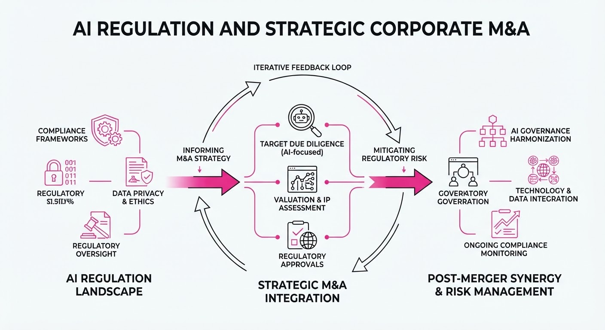
California Governor Gavin Newsom has signed an executive order requiring state agencies to conduct rigorous safety audits on "frontier" AI models, specifically mandating the implementation of "kill switches" for systems posing critical risks. Simultaneously, Salesforce has intensified its vertical integration strategy by acquiring AI-native analytics firm Listen Labs.
- Regulatory Shift: State-level mandates are bypassing federal stagnation, forcing AI developers to adopt standardized safety protocols to maintain market access.
- Market Consolidation: Salesforce is aggressively absorbing specialized AI startups to maintain its lead in the enterprise CRM sector.
- Industry Angle: Expect a bifurcated compliance landscape where developers prioritize safety-by-design to satisfy California’s stringent oversight while M&A activity shifts toward acquiring proprietary data-processing capabilities.
2. Key Details & Timeline (with numbers)
- California Executive Order: Signed in September 2026, the directive requires developers of models exceeding specific compute thresholds to submit to third-party vulnerability testing.
- Kill Switch Requirement: Companies must demonstrate the technical capability to disable or "pause" AI systems within 60 seconds of detecting anomalous, harmful behavior.
- Salesforce M&A: On September 21, 2026, Salesforce finalized the acquisition of Listen Labs to integrate real-time sentiment analysis into its Agentforce platform.
- Scope: The California order applies to any AI model trained on more than 10^26 floating-point operations (FLOPs).
3. By the Numbers
| Metric | Before | After | Change |
|---|---|---|---|
| Salesforce Investment | $0 (Standalone) | $2.0B | +$2.0B (Acquisition, 2026-09-21) |
| Safety Compliance | Voluntary/Self-Reg | Mandatory Audits | New State Mandate (2026-09) |
| Model Threshold | Unlimited/Unregulated | 10^26 FLOPs | Regulatory Floor Established |
- Acquisition Terms: Salesforce acquired Listen Labs for $2.0B in an all-cash transaction, aimed at bolstering AI-driven customer feedback loops.
4. Impact & What to Watch
- Compliance Costs: Developers may see a 15–25% increase in R&D overhead as they pivot to meet California’s auditing and kill-switch requirements.
- Market Fragmentation: Smaller AI firms may struggle to absorb the compliance burden, potentially accelerating a wave of "acqui-hires" by larger entities like Salesforce.
- Watch Next (Regulation): Monitor if other states (e.g., NY, WA) adopt the California "kill switch" standard, creating a de facto national regulatory framework.
- Watch Next (Salesforce): Observe the integration timeline for Listen Labs; specifically, whether Salesforce begins sunsetting legacy analytics tools in favor of Listen Labs’ proprietary architecture by Q1 2027.
Engineering blog · Facebook (Meta) Engineering · Published: 2026-09-14 · salience 9.5/10
Why it matters: Provides a robust, systematic framework for red-teaming and securing agentic sandbox environments.
Read the post: Facebook (Meta) Engineering
AgentRed: Automated Red-Teaming for AI Agent Sandboxes
1. What They Built & Why
Meta Engineering developed AgentRed, a systematic security testing framework designed to harden AI agents against adversarial attacks. As agents gain the ability to execute code and interact with external APIs, they create new attack surfaces. AgentRed automates the discovery of vulnerabilities within containerized sandbox environments, shifting security testing from manual penetration testing to a scalable, repeatable pipeline.
2. How It Works (the practical bits)
- Four-Stage Workflow: Orchestrates a structured attack lifecycle: Analyse (target mapping)Exploit (payload generation)Confirm (verifying impact), and Present (reporting).
- Containerized Sandboxing: Executes tests within isolated, ephemeral containers to safely simulate real-world exploitation without risking production infrastructure.
- Adversarial Orchestration: Uses specialized "attacker" models to iteratively refine exploit payloads based on the target agent's responses and sandbox restrictions.
- Automated Verification: Implements guardrails and automated confirmation checks to ensure identified vulnerabilities are genuine and not false positives.
3. Takeaways You Can Apply
- Adopt the Lifecycle Approach: Don't just prompt-inject; structure your security testing into distinct phases (Analyze, Exploit, Confirm) to make your red-teaming repeatable.
- Isolate Agent Execution: Always run agentic code execution in hardened, ephemeral containers; use AgentRed’s logic to test if your sandbox breakout protections actually hold under adversarial pressure.
Engineering blog · AWS · Published: 2026-09-22 · salience 9.0/10
Why it matters: Offers a practical, architectural blueprint for decomposing complex tasks into specialized agents with integrated guardrails.
Read the post: AWS
Scaling Business Analytics with Specialized Bedrock Agents
1. What They Built & Why
AWS developed a multi-agent orchestration pattern for complex business analytics, moving away from monolithic prompts. By decomposing analytical tasks into specialized agents—each with a distinct persona and toolset—they solved the common issues of context window overflow and erratic reasoning in single-model setups. This system leverages Amazon Bedrock to automate data querying, visualization, and insight generation while maintaining strict enterprise safety standards.
2. How It Works (the practical bits)
- Agent Decomposition: Tasks are split into specialized roles (e.g., Data Analyst, Visualization Specialist, and Insight Summarizer) to maintain focus and accuracy.
- Orchestration Logic: Uses Bedrock Agents to manage task routing and state persistence, ensuring each sub-agent receives only the necessary context.
- Tool Integration: Agents are equipped with specific function-calling capabilities to interact with structured data sources (e.g., SQL databases, APIs).
- Safety Layer: Implements Amazon Bedrock Guardrails to filter PII, enforce content policies, and prevent prompt injection at the orchestration level.
3. Takeaways You Can Apply
- Adopt "Divide and Conquer": If your agent struggles with reasoning, decompose the workflow into a chain of specialized agents rather than increasing prompt complexity.
- Decouple Safety from Logic: Use an external guardrail service to enforce compliance, allowing your agent models to focus exclusively on task execution.
- Instrument for Observability: Use specialized agents to log intermediate reasoning steps, making it easier to debug where a multi-step analytical process fails.
Engineering blog · Databricks · Published: 2026-09-04 · salience 8.5/10
Why it matters: Demonstrates how to integrate evaluation-first workflows into production agent pipelines using standard enterprise tooling.
Read the post: Databricks
Evaluation-First AI Agents: Scaling Support with Databricks & Zepto
1. What They Built & Why
Databricks developed an "evaluation-first" agentic framework to automate complex customer support workflows for Zepto. Facing the challenge of maintaining high accuracy and safety in customer-facing interactions, they integrated MLflow and Unity Catalog into a production pipeline. This system prioritizes rigorous, automated testing before deployment, ensuring that agent responses remain grounded in enterprise data while minimizing hallucinations.
2. How It Works (the practical bits)
- Evaluation-Driven Lifecycle: Uses MLflow to treat agent evaluation as a first-class citizen, running automated tests on every iteration before code reaches production.
- Data Governance: Leverages Unity Catalog to ensure agents have secure, audited access to proprietary support documentation and customer data.
- Automated Guardrails: Implements a multi-stage validation layer that checks agent outputs against predefined quality benchmarks and safety policies.
- Iterative Refinement: Employs a feedback loop where production performance data is fed back into the evaluation suite to improve prompt engineering and retrieval accuracy.
3. Takeaways You Can Apply
- Shift Left on Evals: Integrate evaluation frameworks directly into your CI/CD pipeline rather than treating them as a post-hoc validation step.
- Centralize Context: Use a unified cataloging system to manage the data agents use, ensuring consistency, security, and traceability across all agentic workflows.
Engineering blog · OpenAI · Published: 2026-09-10 · salience 8.0/10
Why it matters: Essential reading for understanding the production-grade orchestration patterns used in modern agentic APIs.
Read the post: OpenAI
OpenAI’s Agents API: Standardizing Agentic Orchestration
1. What They Built & Why
OpenAI released the Agents API, a managed framework designed to abstract the complexity of building production-grade AI agents. Developers previously struggled with brittle orchestration, inconsistent state management, and the "agentic loop" overhead. This API provides a native, scalable harness for managing multi-step reasoning, tool execution, and sub-agent coordination, effectively moving agent logic from custom application code into OpenAI's managed infrastructure.
2. How It Works (the practical bits)
- Managed State & Context: Automatically handles conversation history, memory persistence, and context window management across multi-turn agent interactions.
- Native Tool Orchestration: Simplifies function calling by providing a unified interface for agents to discover, select, and execute tools without manual loop management.
- Sub-Agent Coordination: Enables hierarchical agent patterns where a "manager" agent can spawn and delegate tasks to specialized sub-agents, streamlining complex workflows.
- Built-in Guardrails: Integrates safety and monitoring layers directly into the API, ensuring consistent policy enforcement during autonomous operation.
3. Takeaways You Can Apply
- Offload Orchestration: Shift your agent's state management and loop control to the API provider to reduce latency and infrastructure maintenance.
- Adopt Hierarchical Patterns: Use the sub-agent coordination feature to decompose monolithic prompts into modular, specialized agents, which improves accuracy and debuggability.
- Standardize Tooling: Use the API’s unified tool interface to create reusable tool definitions that can be shared across different agent instances.